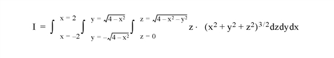

The INT_3D function computes the integral of a trivariate function using iterated Gaussian quadrature. The algorithm’s transformation data is provided in tabulated form with 15 decimal accuracy.
This routine is written in the IDL language. Its source code can be found in the file int_3d.pro in the lib subdirectory of the IDL distribution.
Result = INT_3D( Fxyz, AB_Limits, PQ_Limits, UV_Limits, Pts [, /DOUBLE] )
Returns the triple integral.
A scalar string specifying the name of a user-supplied IDL function that defines the trivariate function to be integrated. The function must accept X, Y, and Z, and return a scalar result.
For example, if we wish to integrate the following function:
We define a function FXY to express this relationship in the IDL language:
FUNCTION fxyz, X, Y, Z
RETURN, z*(x^2+y^2+z^2)^1.5
END
A two-element vector containing the lower (A) and upper (B) limits of integration with respect to the variable x.
A scalar string specifying the name of a user-supplied IDL function that defines the lower (P(x)) and upper (Q(x)) limits of integration with respect to the variable y. The function must accept x and return a two-element vector result.
For example, we might write the following IDL function to represent the limits of integration with respect to y:
FUNCTION PQ_limits, X
RETURN, [-SQRT(4.0 - X^2), SQRT(4.0 - X^2)]
END
A scalar string specifying the name of a user-supplied IDL function that defines the lower (U(x,y)) and upper (V(x,y)) limits of integration with respect to the variable z. The function must accept x and y and return a two-element vector result.
For example, we might write the following IDL function to represent the limits of integration with respect to z:
FUNCTION UV_limits, X, Y
RETURN, [0, SQRT(4.0 - X^2 - Y^2)]
END
The number of transformation points used in the computation. Possible values are: 6, 10, 20, 48, or 96.
Set this keyword to force the computation to be done in double-precision arithmetic.
Compute the triple integral of the trivariate function

Using the functions and limits defined above, integrate with 10, 20, 48, and 96 point formulas (using double-precision arithmetic):
PRINT, INT_3D('Fxyz', [-2.0, 2.0], 'PQ_Limits', 'UV_Limits', 10,$
/D)
PRINT, INT_3D('Fxyz', [-2.0, 2.0], 'PQ_Limits', 'UV_Limits', 20,$
/D)
PRINT, INT_3D('Fxyz', [-2.0, 2.0], 'PQ_Limits', 'UV_Limits', 48,$
/D)
PRINT, INT_3D('Fxyz', [-2.0, 2.0], 'PQ_Limits', 'UV_Limits', 96,$
/D)
INT_3D with 10 transformation points yields: 57.444248
INT_3D with 20 transformation points yields: 57.446201
INT_3D with 48 transformation points yields: 57.446265
INT_3D with 96 transformation points yields: 57.446266
The exact solution (6 decimal accuracy) is: 57.446267
|
Pre 4.0 |
Introduced |
INT_2D , INT_TABULATED , QROMB , QROMO , QSIMP